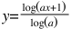
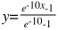
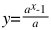
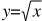
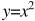
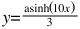
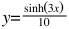
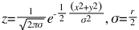

Table of Contents
How DS9 Renders an Image
Scales
Generalized Hyperbolic Stretch
Smoothing
Contours
Large Files
Here is a short description of how DS9 decides to paint a pixel a color on the screen, given a data value... you need a color scale, a contrast/bias pair for the colorscale, clip values for the data, a scale distribution, and finally, the value of the pixel in question.
Step 1. Select a color scale. A color scale is defined as a number of colors (RGB triplets). The number of RGB triplets can vary from just a few to over 200. DS9 contains a number of predefined color scales (Gray, A, B, I8, ...) or the user may load his own color scale.
Step 2. Apply a contrast/bias pair. This step takes the result of step 1 and creates a new array with the contrast/bias applied. The length of the new array will between 200 (for pseudocolor) and 4096 (for truecolor).
Step 3. Calculate the data clip values (low/high data values). The min/max data values may be used or an algorithm may be used to determine the clip data values.
Step 4. Apply the scale distribution. This involves taking the result of step 2, and creating yet another array, this time of size 16384, redistributing the colors, based on the scale algorithm selected (see Scales). The ghs scale uses an array of 1048576 entries instead (see GHS).
Step 5. Based on your data clip values, and the value of the pixel you have, index into the result of step 4, and you have an index into lookup table (for pseudocolor) and an RGB pair (for truecolor and postscript).
The log function is defined as the following:

as x goes from 0 to 1. The user may specify an exponent a to change the distribution of colors within the colorbar. The default value of a is 1000. Typically, optical images respond well at 1000, IR images as low as 100, and high energy bin tables up to 10000. A value of 10000 closely matches the log function of SAOImage as defined as the following:

The pow function is defined as the following:

as x goes from 0 to 1. The user may specify an exponent a to change the distribution of colors within the colorbar. The default value of a is 1000.
The sqrt scale function is defined as the following:

as x goes from 0 to 1.
The square scale function is defined as the following:

as x goes from 0 to 1.
The asinh scale function is defined as the following:

as x goes from 0 to 1.
The sinh scale function is defined as the following:

as x goes from 0 to 1.
The histogram equalization scale function distributes colors based on the frequency of each data value.
Generalized Hyperbolic Stretch
The ghs scale is the Generalized Hyperbolic Stretch of D. Payne and M. Cranfield (ghsastro.co.uk). The other scales have a fixed shape. ghs adds contrast around a data value that you choose, the symmetry point SP, while LP and HP keep the shadows and highlights from being stretched. Putting SP at the sky level brings out faint diffuse emission without saturating the stars.
It has five parameters:
stretch 0-20 How strong the stretch is. 0 is linear. Internally D = estretch - 1. intensity -5-15 The shape b: how tightly the added contrast is concentrated around SP. Larger values concentrate it more. sp data value The symmetry point, where the curve is steepest. lp data value Protect shadows: the curve is a straight line below LP. hp data value Protect highlights: the curve is a straight line above HP. SP, LP and HP are data values, or auto for the low (SP, LP) or high (HP) clip value. To build the scale they are converted to x from 0 to 1 with the current clip values, clamped to [0, 1], and put in order LP <= SP <= HP. Because they are data values, changing the clip values does not move them on the image.
The curve is built from a base function T, chosen by b:
b = -1 T(x) = ln(1 + Dx) b < 0, b ≠ -1 T(x) = (1 - (1 - bDx)(b+1)/b) / (D(b+1)) b = 0 T(x) = 1 - e-Dx b = 1 T(x) = 1 - 1/(1 + Dx) b > 0, b ≠ 1 T(x) = 1 - (1 + bDx)-1/b and assembled in four pieces:
SP <= x < HP T3(x) = T(x - SP) LP <= x < SP T2(x) = -T(SP - x) 0 <= x < LP T1(x) = T2(LP) + T2'(LP)(x - LP) HP <= x <= 1 T4(x) = T3(HP) + T3'(HP)(x - HP) so the curve is the base function above SP, the same function rotated 180° below SP, and straight lines tangent to it below LP and above HP. It is then scaled to run from 0 to 1:
y = (Ti(x) - T1(0)) / (T4(1) - T1(0))With intensity -1 and SP, LP and HP at auto this is ln(1 + Dx) / ln(1 + D), which is nearly log with a = D. The difference is that log divides by log(a), so it reaches the top color slightly before x = 1.
A strong stretch is very steep at SP. With the usual 16384-entry array (step 4), one entry can cover more data values than the sky noise on images with a wide data range, and the sky then shows only two or three gray levels however the parameters are set. ghs therefore uses an array of 1048576 entries. To build it quickly, DS9 computes the inverse of the curve once for each color and fills the array in runs. This still bands when the data range is more than about 2.6x105 times the sky noise; narrow the clip values in that case.
Contrast and bias (step 2) act on the colors, not on the data values. They still work with ghs, but they change the image without changing the colorbar values, while SP changes both. For results that match the colorbar, keep contrast at 1 and bias at 0.5 and adjust SP instead. Contours with contour scale ghs use the same curve, so their levels bunch around SP.
In the Scale Parameters dialog the graph shows the scale function over the histogram. For ghs it has SP, LP and HP handles that you can drag, and GHS Parameters opens sliders that update the image as you move them.
The user may select one of three types of smoothing kernels. Two parameters, r (radius) and k (kernel size), are defined as the following:
Kernel width/height = 2k+1 with r <= k
Boxcar function, width = 2r+1
Tophat function, where the diameter = 2r+1
Gaussian and Elliptical Gaussian function, defined as:where the mean = 0 and sigma = r/2 as initial values. sigma and radius are independent parameters which can be changed by the user.
The contour algorithm is from an unknown author and originally came from FV. The difference between the two modes is:
block : the image is blocked down before the contour is generated
smooth : the image is smoothed via a Gaussian kernel before the contour is generated.block mode is faster as the smoothing parameter increases. Inversely, smooth mode is much slower as the smoothing parameter increases.
There are several factors that determine if DS9 will be able to load a large file.
32 bit OS vs 64 bit OS : to address very large files, you may need to use an 64 bit OS with a 64bit version of DS9. 32bit apps can address up to 4Gb of address space. However, depending on the OS, this limit may be less. Linux for example, the limit appears to be ~3GB (the OS and shared libs eat up a lot of address space). Under 64bit Solaris, 32bit ds9 has a full 4Gb of space. MacOSX appears to have a limit ~3Gb. Under windows, ~2Gb.
Large File Support: is the ability to sequence thru files larger than 4Gb. DS9 is compiled with LFS.
File system: the OS file system must be able to support files larger than 4Gb. Most recent file systems fully support 4GB>.
Memory Management: There are a number of memory management techniques supported in DS9 that will greatly affect the ability and speed of loading large files:
$ ds9 foo.fits # uses mmap
$ cat foo.fits | ds9 - # allocates memory
$ xpaset -p ds9 file foo.fits # uses mmap
$ xpaset -p ds9 fits foo.fits # allocates memoryMemory Map (mmap) is very fast, limit is memory address space (see above). Allocate is very slow, limit is amount of physical memory + swap partition.
Scanning Data: DS9 needs to determine the min and max data values to correctly display your image. For large files, such as Mosaics and Data Cubes, this can take time. You have the option of using using the FITS keywords DATAMIN/MAX or IRAFMIN/MAX - great if present, bad because they are always wrong. Another option is to specify the low and high clip values via the command line or Scale dialogbox.